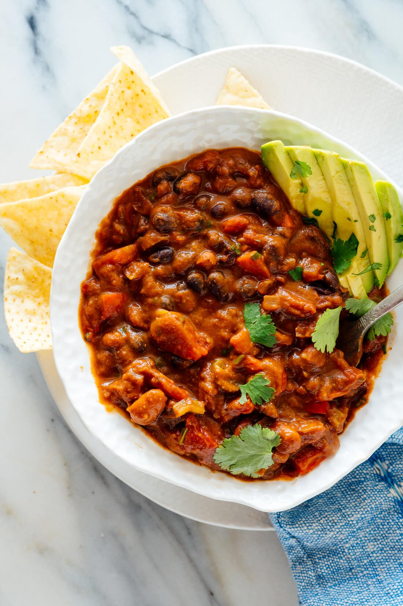

Chili

Ingredients
- 1 onion
- 3 chilis
- 2 tblspns olive oil
- 2 cans of sliced tomatoes
- 140g bulgur
- 2 carrots
- 2 tblspns tomato paste
- 2 tblspns maple syrup
- 2 teaspoons paprika powder
- 1 teaspoon salt
- 1 can of kidney beans
- 1 can of black beans
- 1 can of white beans
Steps
- dice the onion, add onion and chilis into pan with preheated olive oil
- fry for 5 minutes
- add tomatoes to a pot, add water and dice carrots
- add bulgur, carrots syrup, paprika powder and salt to pot
- stir and cook for 15 - 20 minutes
- add beans and cook for 5 more minutes
done :)